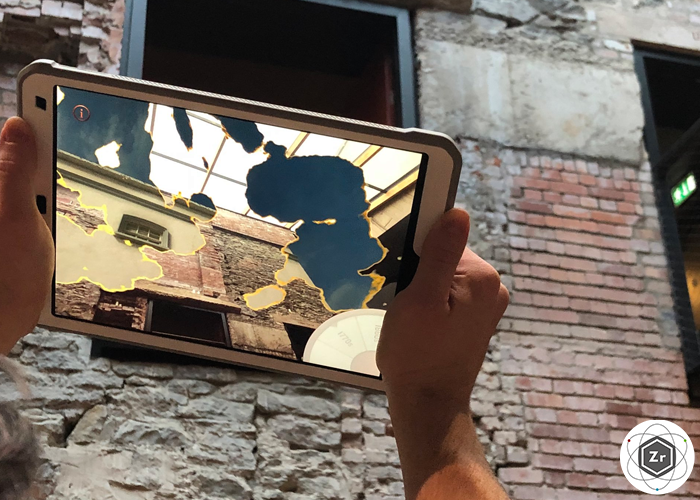
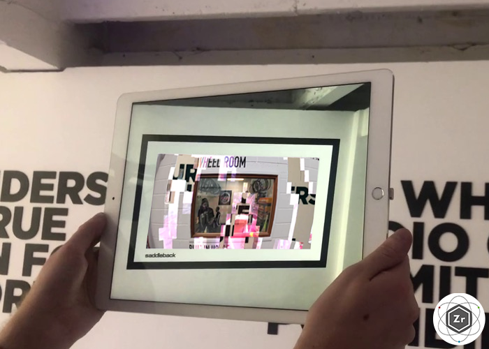
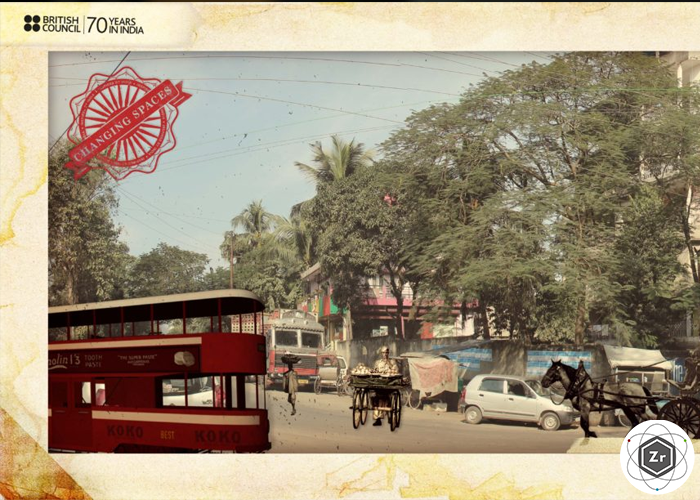

Hidden Florence 3D
AR Kit / Nov 2019
As part of an ongoing research project into San Pier Maggiore church, which once stood in Florence, I programmed the app that can take you back to when the alterpiece, by Jacopo di Cione hung in the church. I built the AR part of the app, implementing AR Kit to recognise the painting in the National Gallery and also to place the church outside, by recognising a flat floor plane.
I created a beautiful shader effect to bring the church into the 21st century, by creating a depth map of the church model and using it to switch between two cameras within the Unity scene, with two different views.
View at Zubr.co

Simple Things Music Festival
Gear VR & AR Core / Oct 2019
I developed visual effects, shaders, and worked with Depth Kit within Unity to implement volumetric videos for this very one off, networked mixed reality music video, as part of Simple Things.
I used Google Resonance to add realistic audio effects to tracks given to us, and created particle systems that reacted to them, producing beautiful flowered effects.
View at Zubr.co

Pirate Mini Games
AR Kit App / Jul 2019
For this series of iPhone based mini games, I worked on the game design, coming up with various small interactions that related to pirate stories, and created custom shaders to be used in the games (such as this one where the users uncovers a dirty treasure map until it triggered an event). I also assisted with the programming and animations in Unity
View at Zubr.co

Parklife Festival 2019
Facebook Filter / Jan 2019
A filter that would activate from fliers given out around train stations, revealing hints to this year's line up. I took the graphics from the festival poster and made a 3D version in Facebook's Spark AR.
View at Zubr.co

Crack Magazine x Aphex Twin
Facebook Filter & App / Nov 2018
To celebrate an interview with Aphex Twin in local music magazine Crack, we made an app and Facebook filter to emphasise his unique style.
I created shaders for app, which uses image recognition on that particular issue of Crack, and I developed the Facebook filter, which places icon Aphex Twin faces on top of your own.
See the app at Zubr.co
Read about the filter at Zubr.co

Window to the Past
preloaded iOS app in ARKit / Nov 2018
As part of a group of heritage projects in the Bristol Old Vic, we worked with a couple of other companies to create an app to take theatre-goers back in time, and see the lovely new foyer how it would have been centuries ago.
I was the lead programmer on this project and developed AR portals to transport the user into prerendered 360s, and started to learn the magic of shaders to create more interesting visual effects
View at Zubr.co

Saddleback at Rouleur Classic
preloaded iOS app in ARKit / Oct 2018
For an elite biking show in London, we worked with a local luxury cycling brand, Saddleback, to make digital additions to their exhibition.
I developed AR windows, which are a pretty neat way of showing 180 videos, and are triggered from words printed on the wall. Using graphical shaders in Unity, the videos would change depending on your distance to them, with a glitching transition. I also created AR labels for their products, giving a futurist way of sharing information about their shoes and wheels, and keeping to their cyberpunk-esque theme.
View at Zubr.co

Changing Spaces
Facebook Filter / Jul 2018
My first Facebook filter was created for the British Council in India, and takes you back in time to sixty years ago.
View at Zubr.co

AR Treasure Hunt
Preloaded app / Apr 2018
A bespoke app, created to tie in with an adventure holiday, featuring a number of very small minigames and animated scenes. As this was my first project at Zubr, I mostly arranged things within the scenes and added particle effects. This was my only AR project in Vuforia.